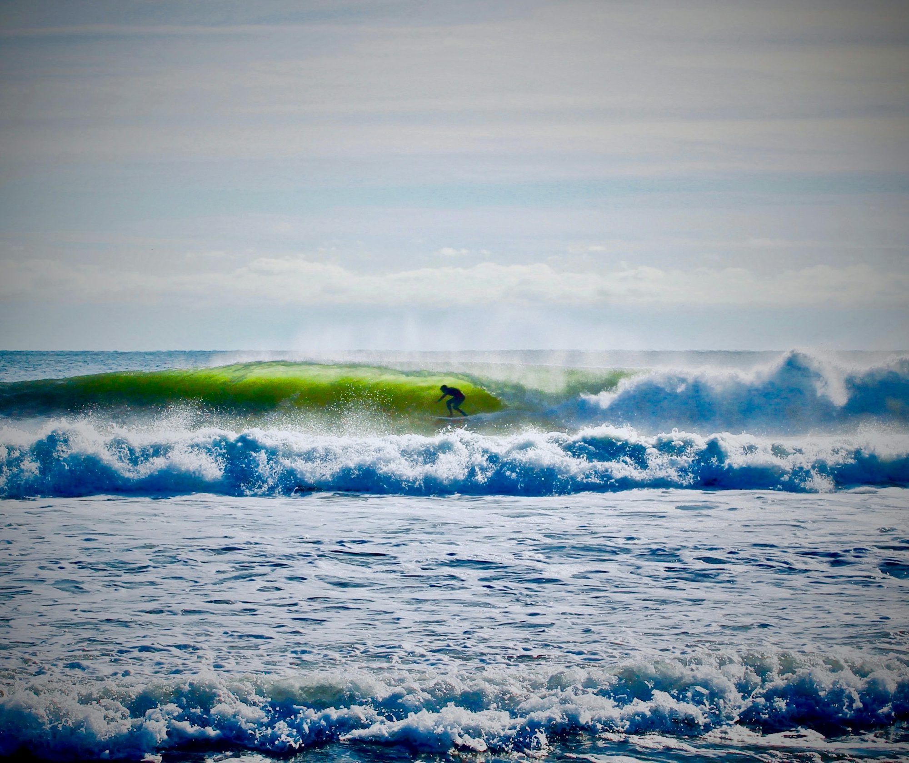
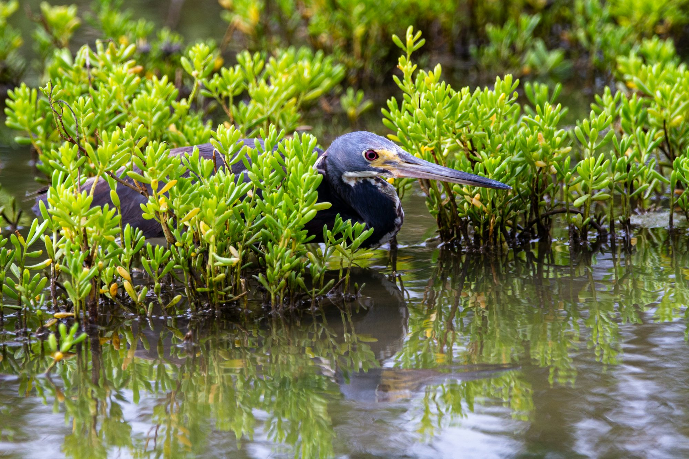
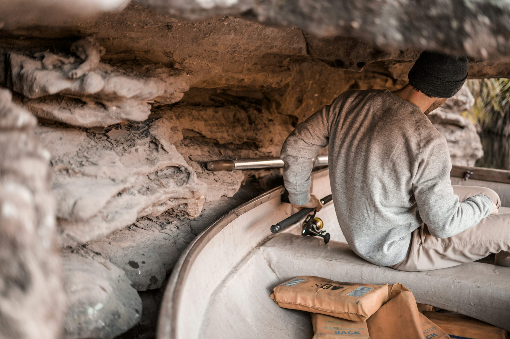

Exploring the Ocean: A Journey Through Popular Water Sports
An engaging look at various water sports, highlighting their techniques, equipment, and unique experiences.Photos


Article collection

Exploring the Diverse Formats of Golf: A Comprehensive Guide
This article delves into the various formats of golf, highlighting their unique rules, strategies, and the enjoyment they bring to players of all skill levels.
2025-08-06

Diving into the Depths: A Comprehensive Guide to Underwater Adventures
Emma Robinson
2025-12-25


Emily Carter
2026-03-06